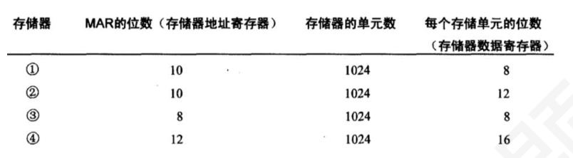

第 1 题
按存储介质分类，下列存储器中属于半导体存储器的是（ ）。
A． 机械硬盘 B． 光盘 C． SRAM D． 磁带 答案与解析 答案：C
SRAM（静态随机存取存储器）是利用半导体器件的双稳态电路来存储信息，属于半导体存储器，C正确；机械硬盘是磁表面存储器，一般又称磁盘，A错误；光盘是光存储器，B错误；磁带也是磁表面存储器，D错误。注意：固态硬盘属于半导体存储器，其核心存储介质为闪存，不同于机械硬盘。
教材第 74 页 第 2 题
下列存储器中，断电后数据会丢失的是（ ）。
A． ROM B． Flash C． SRAM D． 硬盘 答案与解析 答案：C
SRAM属于易失性存储器，断电后存储的数据会丢失；ROM（只读存储器）、 Flash（闪存）和硬盘都属于非易失性存储器，断电后数据不会丢失，C正确。
教材第 74 页 第 3 题
按访问方式分类，Cache 属于（ ）。
A． 随机存取存储器 B． 顺序存取存储器 C． 直接存取存储器 D． 只读存储器 答案与解析 答案：A
Cache（高速缓存）可以随机地对任何存储单元进行存取操作，属于随机存取存储器；顺序存取存储器如磁带，只能按顺序依次访问；直接存取存储器如磁盘，先直接定位到存储区域，再顺序访问；只读存储器只能读取数据。
教材第 74 页 第 4 题
以下关于存储器分类的说法，正确的是（ ）。
A． U 盘属于磁表面存储器 B． 寄存器属于半导体存储器B． C． CD - ROM 属于半导体存储器 D． 硬盘属于光存储器 答案与解析 答案：B
寄存器是CPU内部用于暂存数据的部件，采用半导体材料制成，属于半导体存储器；U盘是基于Flash存储芯片的，属于半导体存储器，A错误；CD - ROM是光盘，属于光存储器，C错误；硬盘是磁表面存储器，D错误。
教材第 74 页 第 5 题
从工作原理角度，DRAM 属于（ ）。
A． 基于触发器存储信息的存储器 B． 基于电容存储信息的存储器B． C． 基于磁性材料存储信息的存储器 D． 基于光反射原理存储信息的存储器 答案与解析 答案：B
DRAM（动态随机存取存储器）利用电容存储电荷来表示信息，由于电容会漏电，需要定期刷新；基于触发器存储信息的是SRAM；基于磁性材料存储信息的有硬盘、磁带等；基于光反射原理存储信息的是光盘，A、C、D错误。
教材第 74 页 第 6 题
下列说法正确的是（ ）。
A． 半导体RAM 信息可读可写，且断电后仍能保持记忆 B． 动态的RAM 属非易失性存储器，而静态的RAM 存储信息是易失性的 C． 静态RAM、动态RAM 都属易失性存储器，断电后存储的信息将消失 D． ROM 不用刷新，且集成度比动态RAM 高，断电后存储的信息将消失 答案与解析 答案：C
A.半导体RAM信息可读可写，但断电后不能保持记忆，A错误。 B.动态的RAM和静态的RAM都是易失性存储器，B错误。 D.ROM不用刷新，但集成度不比动态RAM 高，且断电后存储的信息仍能保持，D错误。
教材第 74 页 第 7 题
下⾯存储器为永久性存储器的是（ ）。
A． DRAM 和Cache B． SRAM 和硬盘 C． 优盘和Cache D． ROM 和外存 答案与解析 答案：D
SRAM与DRAM都是易失性存储器，排除A、B； Cache由SRAM制成，故也有易失性，排除C； D中ROM与外存均有非易失性，D正确。
教材第 74 页 第 8 题
相联存储器是按（ ）进行寻址的存储器。
A． 地址指定方式 B． 堆栈指定方式 C． 寄存器指定方式 D． 内容指定方式 答案与解析 答案：D
相联存储器是指按照地址寻址的存储器，故D正确。
教材第 74 页 第 9 题
层次化存储器结构的设计目的是（ ）。
A． 提高存储器的容量 B． 降低存储器的成本 C． 提高存储器的平均访问速度，同时兼顾成本 D． 增加存储器的种类 答案与解析 答案：C
层次化存储器结构通过将不同速度、容量和成本的存储器组合起来，利用高速存储器（如Cache、寄存器）提高平均访问速度，利用低速大容量存储器（如硬盘）降低成本，达到性能和成本的平衡，C正确；提高容量、降低成本只是部分目的，A、B不全面；增加存储器种类不是设计目的，D错误。
教材第 74 页 第 10 题
层次化存储器结构中，主存与外存之间的数据交换方式通常为（ ）。
A． 由CPU 直接控制数据传输 B． 通过DMA（直接内存访问）方式传输B． C． 由Cache 作为中介进行传输 D． 不需要数据交换 答案与解析 答案：B
主存与外存之间数据交换量较大，若由CPU直接控制传输，会占用大量CPU时间，因此通常采用DMA方式，在DMA控制器的控制下，数据直接在主存和外存之间传输，不经过CPU，提高传输效率，B正确，A错误；Cache主要用于缓存主存中的数据，不参与主存与外存的数据交换，C错误；主存和外存之间需要交换数据，如程序和数据的调入调出，D错误。
教材第 75 页 第 11 题
以下关于层次化存储器结构的描述，错误的是（ ）。
A． 越靠近CPU 的存储器，其访问速度越快 B． 层次化结构通过数据的局部性原理提高访问效率 C． 所有层次的存储器都能被CPU 直接访问 D． 层次化结构可以提高整个存储系统的性价比 答案与解析 答案：C
CPU只能直接访问寄存器和主存，外存中的数据需要先调入主存才能被CPU访问，C错误；越靠近CPU的存储器，如寄存器、Cache，访问速度越快，A正确；层次化结构利用程序访问的局部性原理（时间局部性和空间局部性），将近期可能用到的数据提前存储在高速存储器中，提高访问效率，B正确；通过组合不同特性的存储器，实现了性能和成本的平衡，提高了性价比，D正确。
教材第 75 页 第 12 题
在Cache–主存–外存层次结构中，处理一个内存块的缺页与处理一次Cache 缺失相比，下列说法正确的是（）。
A． Cache 缺失开销远大于缺页开销 B． 缺页开销远大于Cache 缺失开销 C． 两者开销相当 D． 无法比较 答案与解析 答案：B
缺页需要访问外部存储（如磁盘），因此开销极大；而Cache缺失仅需访问主存，开销相对较小，B正确。
教材第 75 页 第 13 题
SRAM 与DRAM 相比，以下说法正确的是（ ）。
A． SRAM 速度慢，成本低，集成度高 B． SRAM 速度快，成本高，集成度低 C． DRAM 速度快，成本高，集成度高 D． DRAM 速度慢，成本低，集成度低 答案与解析 答案：B
SRAM利用触发器存储信息，不需要刷新，速度快，但由于其存储单元结构复杂，成本高，集成度低；DRAM利用电容存储信息，需要定期刷新，速度相对较慢，不过成本低，集成度高，B正确，A、C、D错误。
教材第 75 页 第 14 题
某SRAM 芯片，存储容量为16K×8 位，该芯片的地址线和数据线引脚数目分别为（ ）
A． 14 根地址线，8 根数据线 B． 16 根地址线，8 根数据线 C． 14 根地址线，16 根数据线 D． 16 根地址线，16 根数据线 答案与解析 答案：A
存储容量为16K×8位，16𝐾= 214 ，所以需要14根地址线来寻址；8位表示每个存储单元存储8位数据，因此需要8根数据线，A正确。注意：和通常会采用地址复用的DRAM芯片进行区分。
教材第 75 页 第 15 题
某一SRAM 芯片，其容量为512x8 位，除电源端和接地端外，该芯片引出线的最小数目应为 （）
A． 23 B． 25 C． 50 D． 19 答案与解析 答案：D
512×8 的静态随机存储器有9 根地址线，8 根数据线，一根读写线WE，一根芯片选择线CS，所以其总和是19 根。
教材第 75 页 第 16 题
Flash 存储器的特点不包括（ ）。
A． 非易失性，断电后数据不丢失 B． 可电擦除和编程 C． 读操作速度接近SRAM D． 写操作速度快 答案与解析 答案：D
Flash存储器属于非易失性存储器，断电后数据不丢失，A正确；它可以通过电信号进行擦除和编程操作，B正确；读操作速度较快，接近SRAM，C正确；但Flash的写操作速度相对较慢，因为写操作前需要先擦除，D错误。
教材第 75 页 第 17 题
用16K×8 位的DRAM 芯片构成64K×32 位的存储器，需要芯片数量是（ ）。
A． 4 B． 8 C． 16 D． 32 答案与解析 答案：C
总容量64K×32位，需（64K/16K）×（32位/8位）= 4×4 = 16片，C正确。
教材第 75 页 第 18 题
假定用若干个16K×1 位的存储器芯片组成一个64K×8 位的存储器，芯片内各单元连续编址，则地址BFF0H 所在的芯片的最小地址为（ ）。
A． 4000H B． 6000H C． 8000H D． A000H 答案与解析 答案：C
因为64K×8 位/16K×1 位=4×8，说明在行方向(字方向)扩大了4 倍。因为芯片内各单元连续编址，所以，每个芯片的片选信号由最高两位地址确定，低14 位为片内地址。4个芯片的0000H~3FFFH 、4000H~7FFFH 、8000H~BFFFH 、C000H~FFFFH ，显然，地址地址范围分别为BFFOH所在的芯片的最小地址为8000H。答案为选项C。
教材第 75 页 第 19 题
某SRAM 芯片的存储容量为32MB，若采用按字编址，1 字为4 字节，则该芯片的地址线和数据线数目分别为（）。
A． 25 根地址线，8 根数据线 B． 24 根地址线，8 根数据线 C． 23 根地址线，32 根数据线 D． 20 根地址线，32 根数据线 答案与解析 答案：C
由于按字编址，即每个存储单元为4字节，故只需要23根地址线来寻址，需要32根数据线，C正确。
教材第 75 页 第 20 题
容量1M×16 位的DRAM 存储芯片，如采用二维地址结构，且行地址和列地址的位数相同，则行译码器输出的行选择线有（）根，该芯片的刷新地址计数器是（）位。
A． 10、10 B． 10、20 C． 210 、20 D． 210 、10 答案与解析 答案：D
地址个数为1M，行列各10 根地址线，行列地址分时复用地址线，分别送到行列译码器，行列译码器的输出线有210 根。DRAM 按行刷新，所以刷新计数器即行地址线根数=10。
教材第 76 页 第 21 题
用8 个16MX8 位的DRAM 芯片扩展构成一个128MB 内存条，则下列说法正确的有（ ） I．该内存条中，所有芯片行缓冲的总大小为32KB。 II．若芯片采用分散刷新方式，每个存储周期要么进行读写操作，要么进行刷新操作。 III．若刷新周期为64ms，采用异步刷新方式，每次读写或刷新一行的时间都是125ns，那么每两次刷新间隔之间可读写数据最多124 次IV．每个芯片的地址引脚和数据引脚总数为20 位。
A． II、III、IV B． I、II、IV C． I、III、IV D． I、II、III、IV 答案与解析 答案：C
每个DRAM行缓存为212 × 8𝑏𝑖𝑡，8 个DRAM芯片行缓存总大小为32KB，I 正确；分散刷新方式下，每个存储周期既要进行读写也要进行刷新，II 错误；异步刷新方式，把每行的刷新分散在64ms内，每次刷新间隔为64ms/4096=15625ns ， 15625/125=125 次，其中包含刷新的1 次，所以每次间隔之间读写次数为125-1=124 次，III 正确DRAM 采用地址线复用，每个DRAM 芯片，地址线12 根，数据线8 根，引脚总数20，IV 正确；
教材第 76 页 第 22 题
容量2M×16 位的DRAM 存储芯片，采用行列地址线复用，尽可能减少刷新的开销和地址线条数，关于该芯片说法正确的是
A． 列译码器输出的列选择线有11 根 B． 芯片的刷新地址计数器有210 bit C． 地址引脚和数据引脚总数为27 位 D． 行缓冲的大小为2KB 答案与解析 答案：C
地址个数为2M，要减少地址线条数，那么行列地址位数就要尽可能接近，又要减少刷新开销，刷新按行刷新，所以行要尽可能少，所以行地址为10bit，列地址11bit。地址线条数为max(r，c)=11。 A 错误，列译码器的输出列选有211 根。 B 错误，DRAM 按行刷新，刷新计数器和行地址一样，送往行译码器再进行行选，所以刷新计数器即行地址线根数=10bit。 C 正确，数据引脚为16 位，地址引脚11 位，总数为27 位D 错误，行缓冲为一行的数据大小，为列数𝑐∗16𝑏𝑖𝑡= 211 ∗2𝐵= 4𝐾𝐵
教材第 76 页 第 23 题
DRAM 芯片需要定期刷新的原因是（ ）。
A． 防止存储单元电路损坏 B． 避免数据被误读 C． 补充存储电容上泄漏的电荷，保持数据 D． 提高芯片的访问速度 答案与解析 答案：C
DRAM依靠电容存储电荷来表示数据，由于电容存在漏电现象，一段时间后电荷会丢失，导致数据错误，因此需要定期刷新，补充存储电容上泄漏的电荷，保持数据，C正确。
教材第 76 页 第 24 题
有一个16K×16 的存储器，由4K×4 的DRAM 芯片（内部存储阵列为64×64）构成，采用集中刷新，刷新间隔为2ms，存储器的读写周期为0.5us，死时间率为（ ）
A． 0.6% B． 1% C． 1.6% D． 2% 答案与解析 答案：C
由内部结构为64*64 可知单个芯片之内有64 行，刷新以行为单位，如采用集中刷新方式，存储器刷新一遍最少用64个刷新周期，因为存储器的读写周期为0.5us，刷新周期也为0.5μs，死区=0.5μs * 64=32us，死时间率=32μs÷2000μs*100％=1.6％。
教材第 76 页 第 25 题
某机器的主存储器为32MB，由若干片16KB（内部采用128×128 存储阵列）的DRAM 芯片字和位同时扩展构成。若采用集中式刷新方式，且刷新周期为2ms，那么所有存储单元刷新一遍需要（ ）个存储周期。
A． 128 B． 256 C． 1024 D． 16384 答案与解析 答案：A
刷新以行为单位，一次刷新花费1 个存储周期。该DRAM 为128 * 128 *8bit，一共128 行。
教材第 76 页 第 26 题
对于某存储芯片，假定动态刷新间隔为2ms，读写周期和刷新周期均为0.2μs，该芯片中包含128 行，每个刷新周期可以完成1 行存储单元的刷新，如果该芯片采用异步刷新方式工作，那么其读写周期和刷新周期可以安排为（）。
A． 3999 次读写周期后，安排一次刷新操作 B． 2000 次读写周期后，安排一次刷新操作 C． 128 次读写周期后，安排一次刷新操作 D． 64 次读写周期后，安排一次刷新操作 答案与解析 答案：D
2ms/128行=15.625μs/ 行，所以最大每隔15.625us就需要刷新一行， 15.625/0.2=78.125 次读写操作，即最多78次读写操作就要一次刷新，本题符合的选项只有D 选项。
教材第 76 页 第 27 题
某容量为256MB 的存储器由若干64K×8 位的DRAM 芯片构成，按异步刷新方案，2ms 内将全部单元刷新一遍。则芯片刷新信号周期时间为（）
A． 2.5μs B． 12.5μs C． 7.8μs D． 3.9μs 答案与解析 答案：C
DRAM 按行刷新，64𝐾= 216 ，故行地址为16/2=8 位，行数为2^8=256，要求在2ms 内刷新一遍，刷新信号请求周期为2ms/256 = 7.8μs。
教材第 76 页 第 28 题
用若干片2K* 4 位的存储芯片组成一个8K*8 位的存储器，则地址0B1FH 所在芯片的最大地址是（）
A． 1BFFH B． 0BFFH C． 0CFFH D． 0FFFH 答案与解析 答案：D
本题的第一步是从给出的地址中确定片选信号的值，访问8K 存储器需13 位地址，而2K 存储芯片只需11 根地址，因此，最高2 位地址是片选信号。0B1F 对应的二进制是0 10110001 1111，对应的片选信号是01，此时，低11 位地址全1对应该片的最大地址，也就是01111 11111111，对应的16 进制数为：0FFFFH。
教材第 76 页 第 29 题
某存储器按字节编址，地址0000～FFFFH 为RAM 区，若采用16K×2 位的RAM 芯片进行设计，则在字方向和位方向上分别扩展了（）倍。
A． 4 和2 B． 4 和4 C． 2 和4 D． 8 和4 答案与解析 答案：B
𝐹𝐹𝐹𝐹𝐻−0000𝐻+ 1𝐻= 10000𝐻= 216 = 64𝐾，按字节编址，空间大小为64K×1B。所以字方向扩展倍数为64K/16K = 4，位方向扩展倍数为1B/2b = 4，故正确答案为B。
教材第 77 页 第 30 题
下表给出的各存储器方案中，合理的是（ ）

A． ① B． ② C． ③ D． ④ 答案与解析 答案：A
②不合理。因为存储单元的位数应为字节的整数倍。
教材第 77 页